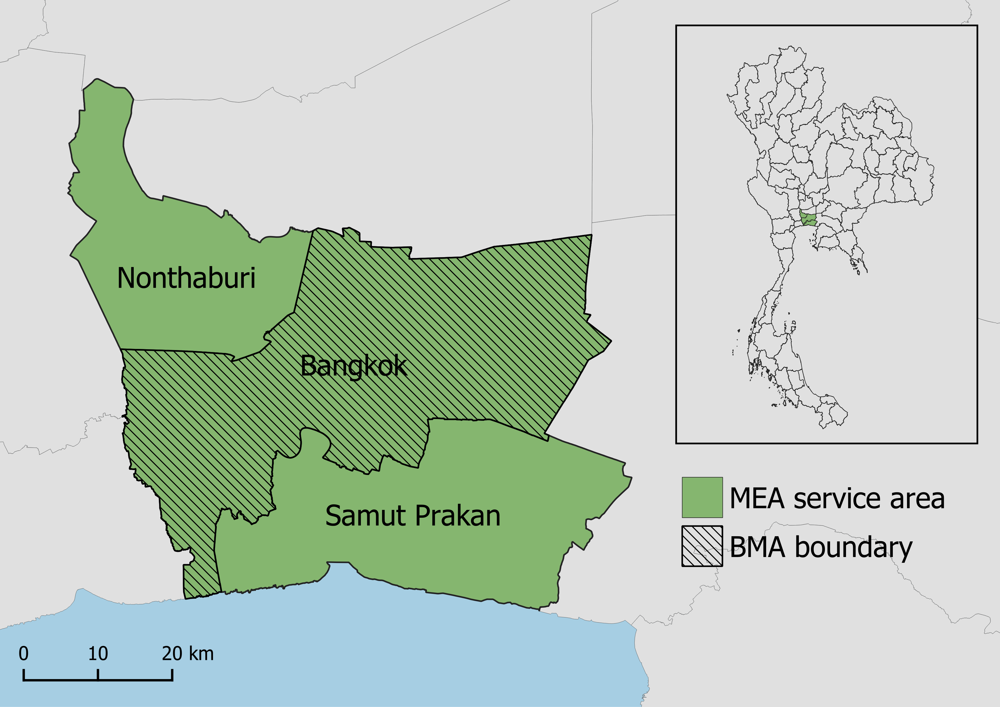

1 Executive Summary

- Motivation: Growth in power demand, renewables, and changes in policies and resource availability will require significant evolution in grid planning. Current planning tools usually focus on near-term horizon (i.e., 5- to 10-year), and are inadequate to support long-term decisions about grid capacity and distribution infrastructure upgrades. Tools for integrated energy planning with both near-term and long-term time horizons could help MEA plan future activities.
- Objectives: Energy sector development and modernization is required to support continued urbanization and socioeconomic growth while reducing environmental impact. The Pacific Northwest National Laboratory (PNNL) and Thammasat University will support Smart Grid planning for Bangkok by providing analysis and assessment of policy pathways using quantitative modeling approaches.
- Approach: Policy and technology trajectories will be modeled using the Global Change Analysis Model (GCAM), an integrated assessment model. GCAM will be used to conduct the detailed assessment of energy and electricity system transition over time in different policy and technology scenarios, and provide high-resolution information on power demand from buildings, transportation, and industry as well as power generation technologies. We will also examine how digitalization and smart technologies could change electricity load and implications for electricity generation.
- Expected Outcomes: Outputs of GCAM will be used to inform MEA’s effort on grid moderation, especially for long-term holistic, integrated energy planning. Results will inform policy recommendations.
2 Introduction & Motivation
Urbanization is driving rapid socioeconomic growth in Thailand, posing challenges for power grids as energy demand increases. Maintaining stability, reliability, and affordability of electricity will be especially challenging as Thailand works toward increasing their renewable energy (RE) shares and decreasing their environmental impact in line with international agreements. These goals and challenges were highlighted in Thailand’s 2018 Power Development Plan, which emphasized three priorities: energy security, economy, and environment. Energy security encompasses the need for stability of power generation, transmission, and distribution to support socioeconomic development and resilience to energy crises. Economic priorities are to promote low cost, high efficiency electricity generation, keeping prices low for consumers to further facilitate socioeconomic growth. Lastly, the plan emphasizes reducing environmental impact by supporting RE development and increasing efficiency in production and consumption.
Figure 2.1: Organizations involved in this analysis.
The US-ASEAN Smart Cities Partnership (USASCP) uses innovative approaches across sectors to address the challenges and opportunities of energy development and urbanization in ASEAN Member States. The U.S. Department of Energy’s Pacific Northwest National Laboratory (PNNL) is partnering with Thammasat University and the Metropolitan Electricity Authority (MEA) of Thailand to supplement Bangkok’s existing Smart City roadmap plans by providing integrated modeling and assessment capabilities. PNNL’s Global Change Analysis Model (GCAM) is a global model integrating socioeconomics, energy, land use, water, and climate systems. PNNL, in collaboration with the Thammasat University modeling team, will use GCAM to assess the trajectories and outcomes of Smart City pathways for Bangkok and focus on the implications for the energy system in this analysis. The results of this analysis will aid MEA in their Smart City planning and implementation (Figure 2.1)
3 Objectives
Figure 3.1: Role of MEA’s Smart Grid initiatives in Thailand’s national power development goals.
MEA supports energy sector plans for Bangkok by implementing Smart Grid development. The Smart Grid framework uses technological innovation to promote efficiency and reliability in power generation, transmission, and distribution systems while ensuring that the grid can both keep up with growing demand and accommodate RE expansion. Smart Grid approaches vary based on stakeholder needs but may include decentralizing generation, facilitating bidirectional data communication across the grid, integrating automation and monitoring, and providing opportunities for demand side management.
Thailand’s 2015 national Smart Grid master plan lays out plans to modernize its power sector through 2036 in line with the Smart Grid framework. In accordance with this national roadmap, MEA is developing Bangkok’s Smart Grid system by building capacity in the following areas:
- Monitoring and Control
- Data Analytics
- Supply Reliability
- Distributed Energy Resources Integration
- Green Energy
- Customer Engagement
Examples of planned technologies and policies include load forecasting, smart meter infrastructure, microgrids, energy storage systems, electric vehicle charging, and improved customer management systems, among others.
The collaboration between PNNL, Thammasat University, and MEA will support the long-term assessment of these plans and the analysis of their contribution to Thailand’s national socioeconomic growth, power development, and and environmental impact reduction goals (Figure 3.1). Based on results of the modeling approach detailed below, PNNL and Thammasat University will provide an analysis of pathways for grid modernization in Bangkok and possible trajectories towards a Bangkok Smart City in 2050.
4 Approach
Integrated Assessment Models (IAMs) are computational models that use links and feedbacks between socioeconomic and environmental systems to assess the implications of technology and policy choices in the context of global climate change. IAMs can provide a holistic approach to energy sector planning by considering multi-sector dynamics and global processes. GCAM, an IAM developed at PNNL, incorporates socioeconomics, energy, land use, water, and climate system (Figure 4.1). The model is global but can also be used to assess specific regions and fine scale processes; PNNL has developed both Thailand and Bangkok regions within the model for national and city level analyses. GCAM utilizes the most up to date data on population, GDP, technology characteristics, policies, resource availabilities, and other inputs. It has the detailed representation of energy technologies in different sectors, including electricity, buildings, transportation, industry, hydrogen production, and other energy supply sectors. The model produces both historical and projected future outputs based on this information. These outputs include greenhouse gas emissions, electricity prices, energy supply and demand, and other indicators at five-year time steps from a historical baseline year to the desired end year. PNNL and Thammasat University’s modeling team will use GCAM to assess the implications of MEA’s Smart Grid plans for Bangkok through the year 2100.

Figure 4.1: Conceptual diagram of GCAM.
5 Scenarios
PNNL, in consultation with Thammasat University and MEA, will develop a set of scenarios for GCAM modeling based on Thailand’s national energy policies and plans as well as MEA’s Smart Grid plans for Bangkok. The impacts of policies and technologies will be assessed in GCAM through associated changes to markets, efficiency assumptions, energy generation shares, and other multi-sector factors. GCAM will predict future outcomes under each scenario; these outcomes may include greenhouse gas emissions, energy supply and demand, market penetration of different technologies, electricity prices, and other relevant indicators of policy impacts. The scenarios will include the following:
- National Policies: Scenario integrating existing national energy development plans and energy and emissions reduction policies.
- Extended National Policies: Scenario additionally including extended sustainable development measures implemented in other countries.
- Bangkok Smart Energy: Scenario integrating MEA’s plans for Bangkok grid modernization and digitalization along with national policies.
- Carbon Neutral Thailand: Scenario using most efficient pathway to national carbon neutrality by 2050.
- Net-Zero Thailand: Scenario using most efficient pathway to net-zero national CO2 emissions by 2065
5.1 National Policies
National Policies Scenario: This scenario integrates all of Thailand’s national power development plans, as well as standards, regulations, and measures to promote energy efficiency, renewable energy expansion, and reduction of greenhouse gas emissions. These include the future power plant capacity changes reported in the Power Development Plan 2018-2037 (PDP2018) and the Renewable and Alternative Energy Development Plan 2018-2037 (AEDP2018). The scenario also incorporates the country’s planned energy conservation measures included the Energy Efficiency Plan 2018-2037 (EEP2018), the Transportation System Development Plan 2018-2037, and other policy documents. Policies and measures in this scenario span the power, transportation, buildings, and industry sectors. The table below summarizes the policies incorporated in the Mandatory National Policies scenario.
| Sector | Policies |
|---|---|
| Energy Supply |
|
| Transportation |
|
| Buildings |
|
| Industry |
|
5.2 Extended National Policies
Extended National Policies Scenario: This scenario includes additional sustainable development measures that have been implemented in other countries and regions along vwith the plans and policies in the National Policies scenario. These include more aggresive power transitions, enhanced energy and emissions regulations, and economic incentives. The table below summarizes the additional policies incorporated in the Extended National Policies scenario. Note that this scenario also incorporates the national policies included in the Mandatory National Policies scenario.
| Sector | Policies |
|---|---|
| Energy Supply |
|
| Transportation |
|
| Buildings & Industry |
|
5.3 Smart Energy
Bangkok Smart Energy Scenario: This scenario incorporates the national-level policies included in the National Policies scenario as well as MEA’s grid modernization and digitalization plans for Bangkok. These plans include Smart Grid distribution system technologies, improved data management, and integration of microgrids and energy storage systems into the grid. Also included are transport sector plans, including EV charging system development, as well as measures for energy management and demand response in other sectors. The table below summarizes several components of MEA’s grid modernization and digitalization plans, along with the capabilities of GCAM integrated assessment modeling for each component.
| Sector | Policies & Technologies | GCAM Capabilities |
|---|---|---|
| Monitoring & Control |
|
|
| Data Analytics |
|
|
| Supply Reliability |
|
|
| DER Integration |
|
|
| Green Energy |
|
|
| Customer Engagement |
|
|
5.4 Carbon Neutral and Net Zero
Net Zero and Carbon Neutral Thailand Scenarios: At the 2021 United Nations climate change conference (COP26), Thailand’s prime minister announced the country’s goal to reach carbon neutrality by 2050 and net zero CO2 emissions by 2065. The carbon neutrality and net zero Thailand scenario represents the most economically efficient pathways for Thailand to reach carbon neutrality by 2050 and net zero CO2 emissions by 2065 given the energy policies included in the extended national policies scenario. This pathway will be found using GCAM’s solving capabilities. The outcomes of this scenario will provide insight into the role that the Bangkok metropolitan area will need play in Thailand’s decarbonization and highlight additional measures that may be needed.
6 Scope
6.1 Spatial

PNNL’s assessment will encompass outcomes both on the national level and the city level, with the city level analysis including the three provinces served by MEA within the Bangkok metropolitan area. The map to the right shows these provinces (Figure 6.1.1): the green region includes Bangkok as well as the two other provinces served by MEA (Nonthaburi and Samut Prakan), while the shaded region includes only Bangkok itself, which is the area governed under the Bangkok Metropolitan Administration (BMA). For the city level analysis, results will be reported for each province individually as well as for the aggregated MEA service area.
Figure 6.1.1. Map of analysis regions
6.2 Temporal
Scenarios will be assessed up from the year 2015 to the year 2100, with the GCAM analysis conducted at five-year intervals within this range.

7 Expected Outcomes
As illustrated above, GCAM will offer capacity for planning and decision-making in addition to MEA’s current capabilities. Benefits of GCAM and the integrated modeling approach include the following:
- Climate change context: Since GCAM integrates water and climate systems, it will provide a more nuanced analysis of Smart Grid pathways in the context of ongoing climate change. GCAM considers the bi-directional relationship between climate and energy: climate change impacts electricity demand and power system stability and reliability, while power generation contributes to climate change.
- Long-term assessment: GCAM will offer long-term projections of the impacts of Smart Grid technologies and policies, beyond the time frame already proposed in Thailand’s Smart Grid plan.
- Technology analysis: Using GCAM’s technology scenario capabilities, PNNL will be able to assess the impacts of specific technology implementations on electricity demand, generation, emissions, and prices far into the future.
- Holistic approach: GCAM analyzes the multi-sector impacts of policies and technologies, supporting the integration of MEA’s Smart Grid development into the Smart City initiative. GCAM’s holistic approach will provide insight into how MEA’s Smart Grid plans fit within Thailand’s broader goals for socioeconomic development and reduction of environmental impact.
These capabilities will enrich MEA’s current capacity for grid planning and analyzing Smart City pathways.
7.1 Key Indicators
The GCAM output for each scenario will include the following indicators calculated at 5-year timesteps through the year 2100 in the study region, as specified in the Spatial and Temporal Scope section.
| Indicator | Description | Units |
|---|---|---|
| Electricity generation | Amount of electricity generated (total & by generation technology | terawatt-hours (TWh) |
| Installed power capacity | Power capacity of power plants (total & by generation technology | TWh |
| Energy demand | Amount of energy demanded (total & by sector | Exajoules (EJ) |
| Final energy consumption | Amount of energy consumed (total & by sector | EJ |
| CO2 emissions | Amount of CO2 emitted (total & by sector | metric tons CO2 equivalent (MT CO2) |
| Electricity price | Price of electricity for consumer by sector | US dollars ($USD) |
| Transport service output | Output of each type of transportation | passenger-kilometers (pass-km) |
7.2 Model Results
PNNL and Thammasat University will present GCAM results showing relevant outcomes of the modeled scenarios up to the year 2100. These results could include greenhouse gas emissions, energy supply and demand, electricity price, and technology penetration, among other indicators. PNNL will work with MEA to determine which indicators are the most important to consider when assessing the impact of Smart Grid policies and technologies.
7.3 Analysis and Recommendations
PNNL, in collaboration with Thammasat University and MEA, will summarize and interpret the GCAM results for each policy pathway and impact indicator. This will include a discussion of how these results relate to MEA’s smart grid efforts and Bangkok’s current Smart City roadmaps and potential additional roadmaps. Based on the GCAM results, PNNL and Thammasat University will provide recommendations for policy pathways that best meet the goals of MEA’s Smart Grid development while making the desired contributions to Thailand’s holistic Smart City and power development objectives. The process of analysis and recommendations will involve engagement and feedback from MEA in order to provide information that best addresses MEA’s planning needs. Final results will be summarized in both a report and a peer-reviewed paper.
8 Timeline
Below is the proposed timeline for GCAM analysis, reports, and stakeholder engagement.
Figure 8.1: Proposed timeline.
9 Inputs
9.1 Socioeconomics
This section describes the socioeconomic (population and GDP) inputs used to define Thailand’s subregions (Bangkok, Nonthaburi, Samut Prakan, and Rest of Thailand) in GCAM. Historical data and future projections were available were available at the national and regional scales for some time periods; however, we calculated socioeconomic data for the remaining time periods using the set of simplifying assumptions shown below.
| Variable | Assumptions | Data Sources |
|---|---|---|
| Population | Pre-2010 and post-2019 population growth rates are consistent between all regions |
- All regions 2010-2019: National Statistical Office - Pre-2010 & post-2020 growth rates: United Nations |
| GDP | Pre-2011 and post-2020 GDP growth rates are consistent between all regions |
- All regions 2011-2020: National Statistical Office - Pre-2011 growth rates:World Bank - 2021-2037 growth rates: PDP2018 - USD-THB exchange rates: FRED |
| Post-2037 GDP growth rate is constant |
9.1.1 Population
Recent Trends
Thailand’s National Statistical Office (NSO) has reported annual population both nationally and by province for the period from 2011 to 2020. The plot below shows national population, revealing a consistent increasing trend from 2011 to 2019, followed by a slight population decline from 2019 to 2020.
**](thailand_files/figure-html/recent%20national%20trends%20pop-1.png)
Figure 9.1.1.1 Thailand National Population from 2011 to 2020. Source: National Statistical Office

Of the three provinces in MEA’s service area (Bangkok, Nonthaburi, and Samut Prakan), Bangkok has the highest population, followed by Samut Prakan and Nonthaburi. The population of Bangkok stayed relatively consistent between 2011 and 2019 but decreased in 2020. In the other two provinces, population increased consistently from 2011 to 2020, reaching approximately 1.35 million and 1.28 million in 2020 in Samut Prakan and Nonthaburi, respectively.
Figure 9.1.1.2. Population from 2011 to 2020 in the MEA service area. Source: National Statistical Office
Historical Trends and Future Projections
To estimate pre-2011 historical population and projected future population for Thailand and the three MEA provinces, we applied population growth rates derived from the UN Thailand Demographic Profile to the NSO data. We made the simplifying assumption that historical and future population growth rates for each MEA province would be consistent with the national growth rates. The following plots show the estimated population from 1970 to 2100 for each region. Values within the shaded regions were reported by NSO, while all other values were estimated using the method described above.
(2011-2020) and [United Nations](https://population.un.org/wpp/Graphs/1_Demographic%20Profiles/Thailand.pdf) (Pre-2011 and post-2020)**](thailand_files/figure-html/historical%20&%20future%20trends%20pop-1.png)
Figure 9.1.1.3. Historical and projected future population in Thailand and MEA area. Sources: National Statistical Office(2011-2020) and United Nations (Pre-2011 and post-2020)
9.1.2 GDP (THB)
The plots below show GDP in units of Thai Baht at current prices for each year. See appendix for plots showing GDP and per capita GDP at constant prices (2005 $USD), which is how GDP is input to GCAM.
Recent Trends
Thailand’s National Statistical Office (NSO) has reported annual GDP both nationally and by province for the period from 2010 to 2019. The plots below shows national GDP and GDP growth rate during this period.
**](thailand_files/figure-html/recent%20national%20trends%20gdp-1.png)
Figure 9.1.2.1. Thailand national GDP and GDP growth rate from 2010 to 2019. Source: National Statistical Office

Of the three MEA provinces, Bangkok had the highest GDP in 2019, reaching over 6 billion Baht. Samut Prakan had the next highest GDP of just over 770 million Baht, while Nonthaburi’s GDP was nearly 350 million Baht. All three provinces experienced relatively consistent GDP growth in the period from 2010 to 2019.
Figure 9.1.2.2. GDP from 2010 to 2019 in the MEA service area. Source: National Statistical Office
The plot below shows the GDP growth rates of all three provinces during the same period.
**](thailand_files/figure-html/recent%20MEA%20province%20growth%20gdp%20baht-1.png)
Figure 9.1.2.3. GDP growth rate in the MEA service area from 2010 to 2019. Source: National Statistical Office
Historical Trends and Future Projections
To estimate pre-2011 historical GDP Thailand and the three MEA provinces, we applied GDP growth rates derived from historical World Bank Thailand national data to the NSO data. To project future GDP, we used the annual projected GDP growth rates from 2020 to 2037 reported in Thailand’s 2018 Power Development Plan, and kept the growth rate constant at the 2037 rate (3.6) from 2037 to 2100. As with population, we assumed that historical and future GDP growth rates for each MEA province would be consistent with the national growth rates. The plot below shows the GDP growth rates for the entire period, 1970 to 2100.
 (2010-2019), [World Bank](https://data.worldbank.org/indicator/NY.GDP.MKTP.CD?locations=TH) (Pre-2010) and [PDP2018](https://www.thaienergy.org/assets/files/pdp2018-pdf.pdf) (Post-2020)**](thailand_files/figure-html/historical%20&%20future%20growth%20gdp%20baht-1.png)
Figure 9.1.2.4. Historical and projected future GDP growth rates in Thailand and MEA area. Sources: National Statistical Office (2010-2019), World Bank (Pre-2010) and PDP2018 (Post-2020)
The following plots show the estimated GDP from 1970 to 2100 for each region. Values within the shaded regions were reported by NSO, while all other values were estimated using the growth rates shown above.
 (2010-2019), [World Bank](https://data.worldbank.org/indicator/NY.GDP.MKTP.CD?locations=TH) (Pre-2010) and [PDP2018](https://www.thaienergy.org/assets/files/pdp2018-pdf.pdf) (Post-2020)**](thailand_files/figure-html/historical%20&%20future%20trends%20gdp%20baht-1.png)
Figure 9.1.2.5. Historical and projected future GDP in Thailand and MEA area. Sources: National Statistical Office (2010-2019), World Bank (Pre-2010) and PDP2018 (Post-2020)
9.1.3 Per Capita GDP (THB)
Recent Trends
The plots below shows national per capita GDP during the recent period of 2011 to 2019.

Figure 9.1.3.1. National per capita GDP from 2011 to 2019
 These plots show per capita GDP in the three MEA provinces during the same period.
These plots show per capita GDP in the three MEA provinces during the same period.
Figure 9.1.3.2. GDP from 2010 to 2019 in the MEA service area. Source: National Statistical Office
Historical Trends and Future Projections
The plot below shows per capita GDP from 1970 to 2100 for each region.

Figure 9.1.3.3. Per capita GDP through 2100 in each region
10 GCAM Initial Diagnostics
10.1 Electricity
10.1.1 National
The figures below compare GCAM output with local data for national electricity consumption (total and by sector).
**](thailand_files/figure-html/national%20consumption%20total%20charts-1.png)
Figure 10.1.1.1. National electricity consumption from 2005 to 2100 (left) and 2011 to 2020 (right) from GCAM output (blue) and local utilities data (red). Local data source: Energy Policy and Planning office
**](thailand_files/figure-html/national%20consumption%20by%20sector%201-1.png)
Figure 10.1.1.2. National electricity consumption by sector in 2015 and 2020 from local utilities data (left) and GCAM output (right). Local data source: Energy Policy and Planning office
The figure below shows the long-term GCAM output for national electricity consumption.

Figure 10.1.1.3. GCAM output national electricity consumption by sector from 2010 to 2100
10.1.2 MEA service area
The figures below compare GCAM output with local data for electricity consumption in the MEA service area (total and by sector).
**](thailand_files/figure-html/consumption%20MEA%20area%20total%20charts-1.png)
Figure 10.1.2.1. Electricity consumption in the MEA service area from 2005 to 2100 (left) and 2011 to 2020 (right) from GCAM output (blue) and MEA data (red). Local data source: Energy Policy and Planning office
**](thailand_files/figure-html/consumption%20by%20sector%20MEA%20area%20chart%201-1.png)
Figure 10.1.2.2. Electricity consumption by sector in the MEA service area from MEA data (left) and GCAM output (right) in 2015 and 2020. Local data source: Energy Policy and Planning office
The figure below shows the long-term GCAM output for electricity consumption by sector in the MEA service area.

Figure 10.1.2.3. GCAM output electricity consumption by sector in the MEA service area from 2010 to 2100
10.2 Energy
10.2.1 National
The figures below compare GCAM output with local data for national final energy consumption (total and by fuel type).
**](thailand_files/figure-html/national%20final%20energy%20total%20charts-1.png)
Figure 10.2.1.1. National total final energy from 1986 to 2100 (left) and 1986 to 2020 (right) from GCAM output (blue) and local data (red). Local data source: Energy Policy and Planning Office
**](thailand_files/figure-html/national%20final%20energy%20consumption%20by%20fuel%201-1.png)
Figure 10.2.1.2. National total final energy by fuel from local data (left) and GCAM output (right) from 2005 to 2020. Local data source: Energy Policy and Planning Office
The figure below shows the long-term GCAM output for national final energy consumption by fuel.

Figure 10.2.1.3. GCAM output national total final energy consumption by fuel from 2010 to 2100
We have not identified any local data regarding energy consumption by sector; the figure below shows GCAM output only.

Figure 10.2.1.4. GCAM output national total final energy consumption by sector from 2010 to 2100
10.2.2 MEA service area
We have not identified any local data regarding energy consumption in the MEA service area. Below are some initial energy results from GCAM for the region.

Figure 10.2.2.1. GCAM output of total final energy consumption in the MEA service area

Figure 10.2.2.2. GCAM output of total final energy consumption by sector in the MEA service area

Figure 10.2.2.3. GCAM output of total final energy consumption by fuel in the MEA service area
10.3 Emissions
10.3.1 National
The figures below compare GCAM output with local data for national CO2 emissions (total and by sector).
**](thailand_files/figure-html/national%20co2%20emissions%20total-1.png)
Figure 10.3.1.1. National total CO2 emissions from 1986 to 2100 (left) and 1986 to 2015 (right) from GCAM output (blue) and local data (red). Local data source: Energy Policy and Planning Office
**](thailand_files/figure-html/national%20co2%20emissions%20by%20sector%20plots-1.png)
Figure 10.3.1.2. National total CO2 emissions by sector from local data (left) and GCAM output (right) from 2005 to 2015. Local data source: Energy Policy and Planning Office
The figure below shows the long-term GCAM output for national CO2 emissions by sector.

Figure 10.3.1.3. GCAM output of national total CO2 emissions by sector through 2100
10.3.2 MEA service area
We have not identified any local data concerning emissions in the MEA service area. Below are some initial emissions results from GCAM for the region.

Figure 10.3.2.1 GCAM output of total CO2 emissions in the MEA service area

Figure 10.3.2.2. GCAM output of total CO2 emissions in the MEA service area
10.4 Transportation
10.4.1 National
The figures below compare GCAM output with local data for national greenhouse gas emissions in the transportation sector (total and by mode of transport).
**](thailand_files/figure-html/national%20transport%20ghg%20total-1.png)
Figure 10.4.1.1. National GHG emissions in transportation from GCAM output (blue) and local data (red). Local data source: Ministry of Transport
**](thailand_files/figure-html/transport%20ghg%20by%20mode-1.png)
Figure 10.4.1.2. National GHG emissions by mode of transportation from local data (left) and GCAM output (right). Local data source: Ministry of Transport
The figure below shows the long-term GCAM output for national greenhouse gas emissions by mode of transport.

Figure 10.4.1.3. GCAM output of national GHG emissions by mode of transportation through 2100
10.4.2 MEA service area
We have not identified any local transportation data in the MEA service area. Below are some initial transportation results from GCAM for the region.

Figure 10.4.2.1. GCAM output of total GHG emissions from transportation in the MEA service area

Figure 10.4.2.2 GCAM output of GHG emissions by transportation mode in the MEA service area
10.5 Buildings
We have not identified local data regarding buildings energy consumption. Below are some initial GCAM outputs for the national and MEA service area regions.

Figure 10.5.1. GCAM output for buildings final energy consumption in all regions from 2005 to 2100

Figure 10.5.2. GCAM output for buildings energy consumption by sector in the MEA service area (top) and the rest of Thailand (bottom)
11 References
11.1 Local Data
Socioeconomics
- Historical Population (2011-2020): National Statistical Office
- Historical Population (1970-2019) and population projection: United Nations
- Historical GDP (2010-2019): National Statistical Office
Electricity
- Electricity consumption: Energy Policy and Planning Office
Energy
- Energy consumption: Energy Policy and Planning Office
Emissions
- CO2 emissions: Energy Policy and Planning Office
12 Appendix
See Appendix for supplementary information.